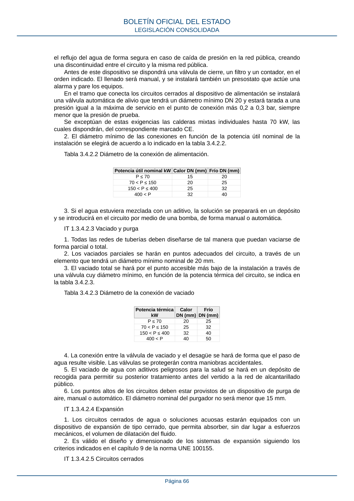

RITE · Fragmento de PDF p58 · versión 2022-08-02 · capa asociada
Formatos: JSON compacto · Markdown · PDF fuente
Ámbito del documento · texto del ámbito · documento y tablas
ID técnico a0108 · PDF pág. 58-69 · jerarquía no validada por persona · no es capítulo: sin_linea_de_encabezado · padre: raíz · literal original en el contenido: «disposición constructiva de superficie mínima que, en metros cuadrados, sea la centésima»
disposición constructiva de superficie mínima que, en metros cuadrados, sea la centésima parte del volumen del local expresado en metros cúbicos, con un mínimo de un metro cuadrado, de baja resistencia mecánica, en comunicación directa a una zona exterior o patio descubierto de dimensiones mínimas 2 x 2 m. 3. La sección de ventilación o la puerta directa al exterior pueden ser una parte de esta superficie. Si la superficie de baja resistencia mecánica se fragmenta en varias, se debe aumentar un 10 % la superficie exigible en la norma con un mínimo de 250 cm² por división. Las salas de máquinas que no comuniquen directamente con el exterior o con un patio de ventilación de dimensiones mínimas, lo pueden realizar a través de un conducto de sección mínima equivalente a la del elemento o disposición constructiva anteriormente definido y cuya relación entre lado mayor y lado menor sea menor que 3. Dicho conducto discurrirá en sentido ascendente sin aberturas en su recorrido y con desembocadura libre de obstáculos. Las superficies de baja resistencia mecánica no deben practicarse a patios que contengan escaleras o ascensores (no se consideraran como patio con ascensor los que tengan exclusivamente el contrapeso del ascensor). 4. El sistema de corte de suministro de gas consistirá en una válvula de corte automática del tipo todo-nada instalada en la línea de alimentación de gas a la sala de máquinas y ubicada en el exterior de la sala. Será de tipo cerrada, es decir, cortará el paso de gas en caso de fallo del suministro de su energía de accionamiento. 5. En caso de que el sistema de detección haya sido activado por cualquier causa, la reposición del suministro de gas será siempre manual. 6. En los demás requisitos exigibles a las salas de máquinas con generadores de calor a gas se estará en lo dispuesto en la ITC-ICG 07 Instalaciones receptoras de combustibles gaseosos del Reglamento técnico de distribución y utilización de combustibles gaseosos, aprobado por el Real Decreto 919/2006, de 28 de julio, o la normativa que la sustituya. 7. Los equipos de llama directa para refrigeración por absorción, así como los equipos de cogeneración, que utilicen combustibles gaseosos, siempre que su potencia útil nominal conjunta sea superior a 70 kW, deberán instalarse en salas de máquinas o integrarse como equipos autónomos de conformidad con los requisitos recogidos en la norma UNE 60601. IT.1.3.4.1.2.4 Sala de máquinas de riesgo alto Las instalaciones que requieren sala de máquinas de riesgo alto son aquellas que cumplen una cualquiera de las siguientes condiciones: a) las realizadas en edificios institucionales o de pública concurrencia; b) las que trabajen con agua a temperatura superior a 110 °C. Además de los requisitos generales exigidos en los apartados anteriores para cualquier sala de máquinas, en una sala de máquinas de riesgo alto el cuadro eléctrico de protección y mando de los equipos instalados en la sala o, por lo menos, el interruptor general y el interruptor del sistema de ventilación deben situarse fuera de la misma y en la proximidad de uno de los accesos. IT.1.3.4.1.2.5 Equipos autónomos de generación de calor 1. Los equipos autónomos degeneración de calor se deben instalar en el exterior de los edificios, a la intemperie, en zonas no transitadas por el uso habitual del edificio, salvo por personal especializado de mantenimiento de estos u otros equipos, en plantas al nivel de calle o en terreno colindante, en azoteas o terrazas. 2. En el caso de que se sitúe en zonas de tránsito se debe dejar una franja libre alrededor del equipo que garantice el mantenimiento del mismo, con un mínimo de 1 metro, delimitada por medio de elementos que impidan el acceso a la misma a personal no autorizado. Aquellos equipos autónomos de generación de calor que no tengan ningún tipo de registro en su parte posterior y el fabricante autorice su instalación adosada a un muro, deben respetar la franja mínima de 1 m exclusivamente en sus partes frontal y lateral. 3. Cuando el equipo autónomo se alimente de gases más densos que el aire, no debe existir comunicación con niveles inferiores (desagües, sumideros, conductos de ventilación a ras del suelo. etc.), en la zona de influencia del equipo (1 m alrededor del mismo). BOLETÍN OFICIAL DEL ESTADO LEGISLACIÓN CONSOLIDADA Página 58 4. En el caso de instalación sobre forjado, se debe verificar que las cargas de peso no excedan los valores soportados por el forjado, emplazando el equipo sobre viguetas apoyadas sobre muros o pilares de carga cuando sea necesario. IT.1.3.4.1.2.6 Dimensiones de las salas de máquinas 1. Las instalaciones térmicas deberán ser perfectamente accesibles en todas sus partes de forma que puedan realizarse adecuadamente y sin peligro todas las operaciones de mantenimiento, vigilancia y conducción. 2. La altura mínima de la sala será de 2,50 m; respetándose una altura libre de tuberías y obstáculos sobre la caldera de 0,5 m. 3. Los espacios mínimos libres que deben dejarse alrededor de los generadores de calor, según el tipo de caldera, serán los que se señalan a continuación, o los que indique el fabricante, cuando sus exigencias superen las mínimas anteriores: a) Calderas con quemador de combustión forzada. Para estas calderas el espacio mínimo será de 0,5 m entre uno de los laterales de la caldera y la pared permitiendo la apertura total de la puerta sin necesidad de desmontar el quemador, y de 0,7 m entre el fondo de la caja de humos y la pared de la sala. Cuando existan varias calderas, la distancia mínima entre ellas será de 0,5 m, siempre permitiendo la apertura de las puertas de las calderas sin necesidad de desmontar los quemadores. El espacio libre en la parte frontal será igual a la profundidad de la caldera, con un mínimo de un metro; en esta zona se respetará una altura mínima libre de obstáculos de 2 m. b) Calderas de cámara de combustión abierta y tiro natural. El espacio libre en el frente de la caldera será como mínimo de 1 m, con una altura mínima de 2 m libre de obstáculos. Entre calderas, así como las calderas extremas y los muros laterales y de fondo, debe existir un espacio libre de al menos 0,5 m que podrá disminuirse en los modelos en que el mantenimiento de las calderas y su aislamiento térmico lo permita. Deben tenerse en cuenta las recomendaciones del fabricante. En el caso de que las calderas a instalar sean del tipo mural y/o modular formando una batería de calderas o cuando las paredes laterales de las calderas a instalar no precisen acceso, puede reducirse la distancia entre ellas, teniendo en cuenta el espacio preciso para poder efectuar las operaciones de desmontaje de la envolvente y del mantenimiento de las mismas. Con calderas de combustibles sólidos, la distancia entre éstas y la chimenea será igual, al menos, al tamaño de la caldera. Las calderas de combustibles sólidos en las que sea necesaria la accesibilidad al hogar, para carga o reparto del combustible, tendrán un espacio libre frontal igual, por lo menos, a una vez y media la profundidad de la caldera. Las calderas de biocombustibles sólidos en las que la retirada de cenizas sea manual, tendrán un espacio libre frontal igual, por lo menos, a vez y media la profundidad de la caldera. IT 1.3.4.1.2.7 Ventilación de salas de máquinas 1. Generalidades 1.1 Toda sala de máquinas cerrada debe disponer de medios suficientes de ventilación. 1.2 El sistema de ventilación podrá ser del tipo: natural directa por orificios o conductos, o forzada. 1.3 Se recomienda adoptar, para mayor garantía de funcionamiento, el sistema de ventilación directa por orificios. 1.4 En cualquier caso, se intentará lograr, siempre que sea posible, una ventilación cruzada, colocando las aberturas sobre paredes opuestas de la sala y en las cercanías del techo y del suelo. BOLETÍN OFICIAL DEL ESTADO LEGISLACIÓN CONSOLIDADA Página 59 1.5 Los orificios de ventilación, tanto directa como forzada, distarán al menos 50 cm de cualquier hueco practicable o rejillas de ventilación de otros locales distintos de la sala de máquinas. Las aberturas estarán protegidas para evitar la entrada de cuerpos extraños y que no puedan ser obstruidos o inundados. 2. Ventilación natural directa por orificios 2.1 La ventilación natural directa al exterior puede realizarse, para las salas contiguas a zonas al aire libre, mediante aberturas de área libre mínima de 5 cm2/kW de potencia térmica nominal. 2.2 Se recomienda practicar más de una abertura y colocarlas en diferentes fachadas y a distintas alturas, de manera que se creen corrientes de aire que favorezcan el barrido de la sala. 2.3 Para combustibles gaseosos el orificio para entrada de aire se situará obligatoriamente con su parte superior a menos de 50 cm del suelo; la ventilación se complementará con un orificio, con su lado inferior a menos de 30 cm del techo, este último de superficie 10 · A (cm2), siendo A la superficie de la sala de máquinas en m2. 3. Ventilación natural directa por conducto 3.1 Cuando la sala no sea contigua a zona al aire libre, pero pueda comunicarse con ésta por medio de conductos de menos de 10 m de recorrido horizontal, la sección libre mínima de éstos, referida a la potencia térmica nominal instalada, será: conductos verticales: 7,5 cm2/kW. conductos horizontales: 10 cm2/kW. 3.2 Las secciones indicadas se dividirán en dos aberturas, por lo menos, una situada cerca del techo y otra cerca del suelo y, a ser posible, sobre paredes opuestas. 3.3 Para combustibles gaseosos el conducto de ventilación inferior desembocará a menos de 50 cm del suelo; en el caso de gases mas pesados que el aire el conducto será obligatoriamente ascendente; el conducto de ventilación superior será siempre ascendente. 4. Ventilación forzada 4.1 En la ventilación, se dispondrá de un ventilador de impulsión, soplando en la parte inferior de la sala, que asegure un caudal mínimo, en m3/h de 1,8 · PN + 10 · A, siendo PN la potencia térmica nominal instalada, en kW y A la superficie de la sala en m2. 4.2 Para disminuir la presurización de la sala con respecto a los locales contiguos, se dispondrá de un conducto de evacuación del aire de exceso, situado a menos de 30 cm del techo y en lado opuesto de la ventilación inferior de manera que se garantice una ventilación cruzada, construido con material incombustible y dimensionado de manera que la sobre- presión no sea mayor que 20 Pa; las dimensiones mínimas de dicho conducto serán 10 · A (cm2), siendo A la superficie en m2 de la sala de máquinas, con un mínimo de 250 cm2. 4.3 Las pautas del funcionamiento del sistema de ventilación forzada serán las siguientes: Encendido: a) Arrancar el ventilador. b) Mediante un detector de flujo o un presostato debe activarse un relé temporizado que garantice el funcionamiento del sistema de ventilación antes de dar la señal de encendido a la caldera. c) Arrancar el generador de calor. Apagado: a) Parar el generador de calor. b) Sólo cuando todas las calderas de la sala estén paradas debe desactivarse el relé mencionado anteriormente y parar el ventilador. 5. Sistema de extracción para gases más pesados que el aire 5.1 En las salas de máquinas con calderas que utilicen gases más pesados que el aire, en las que no se pueda lograr un conducto inferior para evacuación de fugas de gas al BOLETÍN OFICIAL DEL ESTADO LEGISLACIÓN CONSOLIDADA Página 60 exterior se instalará un sistema de extracción de aire activado por el sistema de detección de fugas. 5.2 El equipo de extracción debe estar compuesto de un extractor de aire de tipo centrífugo instalado en el exterior del recinto, en el caso que no pueda instalarse en el exterior del local, puede ser ubicado en el interior lo más próximo al punto de penetración del conducto de extracción en la sala de máquinas. El conjunto carcasa-rodete debe estar fabricado con materiales que no produzcan chispas mecánicas y debe estar accionado por un motor eléctrico externo al conjunto, con envolvente IP-33. 5.3 Conductos de extracción: el extractor debe ser conectado a una red de conductos con bocas de aspiración dispuestas en las proximidades de los posibles puntos de fuga de gas coincidiendo, por lo general, con la situación de los detectores. La altura de las mencionadas bocas debe ser la misma que la indicada para los detectores en el apartado cuatro de la IT 1.3.4.1.2.3. El número mínimo de bocas de aspiración debe ser igual al número de detectores. 5.4 Caudal de extracción: el caudal de extracción mínimo, expresado en m3/h, se calcula mediante la expresión: Q = 10 · A, donde A es la superficie en planta de la sala de máquinas, expresada en m2. En todos los casos debe garantizarse un caudal mínimo de 100 m3/h. 5.5 Funcionamiento del sistema: el conjunto de extracción debe funcionar cuando el equipo de detección esté activado y permanecerá en funcionamiento hasta que se restablezcan las condiciones normales de operación. IT 1.3.4.1.2.8 Medidas especificas para edificación existente Para las salas de máquinas en edificios existentes se consideran válidos los mismos criterios detallados en los apartados anteriores, si bien cuando ello no sea posible se admiten las siguientes excepciones: 1. Dimensiones Las dimensiones indicadas en la IT 1.3.4.1.2.2 y en la IT 1.3.4.1.2.3, podrán modificarse de manera justificada, siempre que se garantice el mantenimiento de los equipos instalados; en el caso concreto de las calderas se deberá incluir la documentación aportada por el fabricante de las mismas, en la cual se detalle el mencionado aspecto. 2. Patio de ventilación En edificios ya construidos, dicho patio podrá tener una superficie mínima en planta de 3 m2 y la dimensión del lado menor será como mínimo de 1 m. 3. Salas de máquinas con calderas a gas en las que no se logre la superficie no resistente En las reformas de las salas de máquinas en edificios existentes con calderas de gas, en las que no sea posible lograr la superficie no resistente al exterior, o a patio de ventilación, se realizará una ventilación forzada y se instalará un sistema de detección y corte de fugas de gas. 4. Emplazamiento No está permitida la ubicación de salas máquinas con calderas a gas en niveles inferiores a semisótano o primer sótano; en las reformas de salas por debajo de ese nivel se deberá habilitar un nuevo local para las calderas. 5. Ventilación superior En las reformas de las salas de máquinas en edificios existentes con calderas de gas, si existiera una viga o cualquier otro obstáculo constructivo que impidiera la colocación de la rejilla superior de ventilación según lo descrito en el apartado 2.3 de la IT 1.3.4.1.2.7, se podrá colocar ésta más baja siempre que su parte superior se encuentre a menos de 30 cm del techo y su parte inferior se encuentre a menos de 50 cm del mismo techo. IT 1.3.4.1.3 Chimeneas BOLETÍN OFICIAL DEL ESTADO LEGISLACIÓN CONSOLIDADA Página 61 IT 1.3.4.1.3.1 Evacuación de los productos de la combustión La evacuación de los productos de la combustión en las instalaciones térmicas se realizará de acuerdo con las siguientes normas generales: a) Los edificios de viviendas de nueva construcción en los que no se prevea una instalación térmica central ni individual, dispondrán de una preinstalación para la evacuación individualizada de los productos de la combustión, mediante un conducto conforme con la normativa europea, que desemboque por cubierta y que permita conectar en su caso calderas de cámara de combustión estanca tipo C, según la norma UN-CEN/TR 1749 IN. b) En los edificios de nueva construcción en los que se prevea una instalación térmica, la evacuación de los productos de la combustión del generador se realizará por un conducto por la cubierta del edificio, en el caso de instalación centralizada, o mediante un conducto igual al previsto en el apartado anterior, en el caso de instalación individualizada. c) En las instalaciones térmicas que se reformen cambiándose sus generadores y que ya dispongan de un conducto de evacuación a cubierta, este será el empleado para la evacuación, siempre que sea adecuado al nuevo generador objeto de la reforma y de conformidad con las condiciones establecidas en la reglamentación vigente. d) En las instalaciones térmicas existentes que se reformen cambiándose sus generadores que no dispongan de conducto de evacuación a cubierta o éste no sea adecuado al nuevo generador objeto de la reforma, la evacuación se realizará por la la cubierta del edificio mediante un nuevo conducto adecuado. Como excepción a los anteriores casos generales anteriores se permitirá siempre que los generadores utilicen combustibles gaseosos, la salida directa de estos productos al exterior con conductos por fachada o patio de ventilación, únicamente, cuando se trate de aparatos estancos de potencia útil nominal igual o inferior a 70 kW ó de aparatos de tiro natural para la producción de agua caliente sanitaria de potencia útil igual o inferior a 24,4 kW, en los siguientes casos: 1. En las instalaciones térmicas de viviendas unifamiliares. 2. En las instalaciones térmicas de edificios existentes que se reformen, con las circunstancias mencionadas en el apartado d), cuando se instalen calderas individuales con emisiones de NOx de clase 5. IT 1.3.4.1.3.2 Diseño y dimensionado de chimeneas 1. Queda prohibida la unificación del uso de los conductos de evacuación de los productos de la combustión con otras instalaciones de evacuación. 2. Cada generador de calor de potencia térmica nominal mayor que 400 kW tendrá su propio conducto de evacuación de los productos de la combustión. 3. Los generadores de calor de potencia térmica nominal igual o menor que 400 kW, que tengan la misma configuración para la evacuación de los productos de la combustión, podrán tener el conducto de evacuación común a varios generadores, siempre y cuando la suma de la potencia sea igual o menor a 400 kW. Para generadores de cámara de combustión abierta y tiro natural, instalados en cascada, el ramal auxiliar, antes de su conexión al conducto común, tendrá un tramo vertical ascendente de altura igual o mayor que 0,2 m. 4. En ningún caso se podrán conectar a un mismo conducto de humos generadores que empleen combustibles diferentes. 5. Las chimeneas se diseñarán y calcularán según los procedimientos descritos en las normas UNE 123001, UNE-EN 13384-1 y UNE-EN 13384-2 cuando sean modulares y UNE 123003 cuando sean autoportantes. No obstante se considerarán válidas las chimeneas que se diseñen utilizando otros métodos, siempre que se justifique su idoneidad en el proyecto de la instalación. 6. En el dimensionado se analizará el comportamiento de la chimenea en las diferentes condiciones de carga; además, si el generador de calor funciona a lo largo de todo el año, se comprobará su funcionamiento en las condiciones extremas de invierno y verano. 7. El tramo horizontal del sistema de evacuación, con pendiente hacia el generador de calor, será lo más corto posible. BOLETÍN OFICIAL DEL ESTADO LEGISLACIÓN CONSOLIDADA Página 62 8. Se dispondrá un registro en la parte inferior del conducto de evacuación que permita la eliminación de residuos sólidos y líquidos. 9. La chimenea será de material resistente a la acción agresiva de los productos de la combustión y a la temperatura, con la estanquidad adecuada al tipo de generador empleado. En el caso de chimeneas metálicas la designación según la norma UNE-EN 1856-1 o UNE- EN 1856-2 de la chimenea elegida en cada caso y para cada aplicación será de acuerdo a lo establecido en la norma UNE 123001. 10. Para la evacuación de los productos de la combustión de calderas que incorporan extractor, la sección de la chimenea, su material y longitud serán los certificados por el fabricante de la caldera. El sistema de evacuación de estas calderas tendrá el certificado CE conjuntamente con la caldera y podrá ser de pared simple, siempre que quede fuera del alcance de las personas, y podrá estar construido con tubos de materiales plásticos, rígidos o flexibles, que sean resistentes a la temperatura de los productos de la combustión y a la acción agresiva del condensado. Se cuidarán con particular esmero las juntas de estanquidad del sistema, por quedar en sobrepresión con respecto al ambiente. 11. En ningún caso el diseño de la terminación de la chimenea obstaculizará la libre difusión en la atmósfera de los productos de la combustión. IT 1.3.4.1.3.3 Evacuación por conducto con salida directa al exterior o a patio de ventilación 1. Condiciones de aplicación Los sistemas de evacuación recogidos en esta IT serán exclusivamente utilizados para los casos excepcionales indicados en el apartado d) de la IT 1.3.4.1.3.1. Evacuación de productos de combustión. 2. Características de los patios de ventilación 1. Los patios de ventilación para la evacuación de productos de combustión de aparatos conducidos en edificios existentes, deben tener como mínimo una superficie en planta, medida en m2, igual a 0,5 x NT, con un mínimo de 4 m2, siendo NT el número total de locales que puedan contener aparatos conducidos que desemboquen en el patio. 2. Además, si el patio esta cubierto en su parte superior con un techado, este debe dejar libre una superficie permanente de comunicación con el exterior del 25 % de su sección en planta, con un mínimo de 4 m2. 3. Aparatos de tipo estanco 1. Características de los tubos de evacuación. En el caso de aparatos de tipo estanco, el sistema de evacuación de los productos de combustión y admisión del aire debe ser el diseñado por el fabricante para el aparato. Con carácter general, el extremo final del tubo debe estar diseñado de manera que se favorezca la salida frontal (tipo cañón) a la mayor distancia horizontal posible de los productos de combustión. Cuando no se puedan cumplir las distancias mínimas a una pared frontal, se pueden utilizar en el extremo deflectores desviadores del flujo de los productos de la combustión. 2. Características de la instalación. La proyección perpendicular del conducto de salida de los productos de la combustión sobre los planos en que se encuentran los orificios de ventilación y la parte practicable de los marcos de ventanas debe distar 40 cm como mínimo de éstos, salvo cuando dicha salida se efectúe por encima, en que no es necesario guardar tal distancia mínima. Se pueden utilizar desviadores laterales de los productos de la combustión cuando no pueda respetarse la distancia mínima de 40 cm. Dependiendo del tipo de fachada y del tipo de salida (concéntrica o de conductos independientes) se distinguen los siguientes casos: a) A través de fachada, celosía o similar. a1) Tubo concéntrico (interior salida productos de la combustión, exterior toma de aire para combustión). El tubo debe sobresalir ligeramente del muro en la zona exterior hasta un máximo de 3 cm para el tubo exterior. a2) Tubo de conductos independientes (un tubo para entrada de aire y otro para salida de los productos de la combustión). Tanto el tubo para salida de los productos de la BOLETÍN OFICIAL DEL ESTADO LEGISLACIÓN CONSOLIDADA Página 63 combustión como el tubo para entrada de aire puede sobresalir como máximo 3 cm de la superficie de la fachada. En ambos casos, se pueden colocar rejillas en los extremos diseñadas por el fabricante. b) A través de la superficie de fachada perteneciente al ámbito de una terraza, balcón o galería techados y abiertos al exterior. En este caso, caben dos posibilidades: b1) El eje del tubo de salida de los productos de la combustión se encuentra a una distancia igual o inferior a 30 cm respecto del techo de la terraza, balcón o galería, medidos perpendicularmente. En esta situación, dicho tubo se debe prolongar hacia el límite del techo de la terraza, balcón o galería de forma que entre el mismo y el extremo del tubo se guarde una distancia máxima de 10 cm, prevaleciendo las indicaciones que el fabricante facilite al respecto. b2) El eje del tubo de salida de los productos de la combustión se encuentra a una distancia superior a 30 cm respecto del techo de la terraza, balcón o galería, medidos perpendicularmente. En esta situación, el extremo de dicho tubo no debe sobresalir de la pared que atraviesa más de 10 cm, prevaleciendo las indicaciones que el fabricante facilite al respecto. c) A través de fachada, celosía o similar, existiendo una cornisa o balcón en cota superior a la de salida de los productos de la combustión. Se debe seguir el mismo criterio que en el caso b), siendo el límite a considerar el de la cornisa o balcón. d) Aparato situado en el exterior, en una terraza, balcón o galería abiertos y techados. De forma general se debe seguir el mismo criterio que en los casos b) y c), con la salvedad de que cuando el eje del tubo de salida de los productos de la combustión se encuentre a una distancia superior a 30 cm respecto del techo de la terraza, balcón o galería, la longitud del tubo de salida de los productos de la combustión debe ser la mínima indicada por el fabricante. Si en los casos b) o d) la terraza, balcón o galería fuese cerrada con sistema permanente, con posterioridad a la instalación del aparato, los tubos de salida de los productos de la combustión se deben prolongar para atravesar el cerramiento siguiendo los mismos criterios que a través de muro o celosía indicados en el caso a). En cualquiera de los casos anteriores, y de forma general, cuando la salida de los productos de la combustión se realice directamente al exterior a través de una pared, el eje del conducto de evacuación de los productos de la combustión se debe situar, como mínimo, a 2,20 m del nivel del suelo más próximo con tránsito o permanencia de personas, medidos en sentido vertical. Se exceptúan de este requisito, las salidas de productos de la combustión de los radiadores murales de tipo ventosa de potencia inferior a 4,2 kW, siempre y cuando estén protegidas adecuadamente para evitar el contacto directo. Entre dos salidas de productos de la combustión situadas al mismo nivel, se debe mantener una distancia mínima de 60 cm. La distancia mínima se puede reducir a 30 cm si se emplean deflectores divergentes indicados por el fabricante o cualquier otro método que utilizando los medios suministrados por el fabricante garantice que las dos salidas sean divergentes. La salida de productos de la combustión debe distar al menos 1 m de pared lateral con ventanas o huecos de ventilación, o 30 cm de pared lateral sin ventanas o huecos de ventilación. La salida de productos de la combustión debe distar al menos 3 m de pared frontal con ventana o huecos de ventilación, o de 2 m de pared frontal sin ventanas o huecos de ventilación. Además se tendrá en cuenta lo indicado en el apartado 8.5 de la Norma UNE 60670-6 referente a requisitos adicionales de los conductos de evacuación. IT.1.3.4.1.4 Almacenamiento de biocombustibles sólidos. 1. Las instalaciones con potencia útil nominal inferior o igual a 70 kW o con una capacidad de almacenamiento inferior o igual a 5 toneladas deberán contar, al menos, con envases o depósitos para el almacenamiento. El resto de las instalaciones alimentadas con BOLETÍN OFICIAL DEL ESTADO LEGISLACIÓN CONSOLIDADA Página 64 biocombustibles sólidos deben incluir un lugar de almacenamiento dentro o fuera del edificio, destinado exclusivamente para este uso. 2. Cuando el lugar de almacenamiento esté situado fuera del edificio podrá construirse en superficie o subterráneo, pudiendo utilizarse también contenedores específicos de biocombustible, debiendo prever un sistema adecuado para la extracción y transporte. 3. En edificios nuevos la capacidad mínima de almacenamiento de biocombustibles será la suficiente para cubrir el consumo de 15 días. 4. Se debe prever un procedimiento de vaciado del almacenamiento de biocombustibles para el caso de que sea necesario, para la realización de trabajos de mantenimiento o reparación o en situaciones de riesgo de incendio. 5. En edificios nuevos el lugar de almacenamiento de biocombustible sólido y la sala de máquinas deben encontrarse situados en locales distintos y con las aperturas para el transporte desde el almacenamiento a los generadores de calor dotadas con los elementos adecuados para evitar la propagación de incendios de una a otra. 6. En instalaciones térmicas existentes que se reformen, en donde no pueda realizarse una división en dos locales distintos, el depósito de almacenamiento estará situado a una distancia de la caldera superior a 0,7 m y deberá existir entre el generador de calor y el almacenamiento una pared con resistencia ante el fuego de acuerdo con la reglamentación vigente de protección contra incendios. 7. Las paredes, suelo y techo del lugar de almacenamiento no permitirán filtraciones de humedad, impermeabilizándolas en caso necesario. 8. Las paredes y puertas del almacén deben ser capaces de soportar la presión del biocombustible. Así mismo, la resistencia al fuego de los elementos delimitadores y estructurales del almacenamiento de biocombustibles será la que determine la reglamentación de protección contra incendios vigente. Los almacenes deberán disponer de sistemas de detección y extinción de incendios. 9. No están permitidas las instalaciones eléctricas dentro del almacén. 10. Cuando se utilice un sistema neumático para el transporte de la biomasa, éste deberá contar con una toma de tierra. 11. Cuando se utilicen sistemas neumáticos de llenado del almacenamiento debe: a) Instalarse en la zona de impacto un sistema de protección de la pared contra la abrasión derivada del golpeteo de los biocombustibles y para evitar su desintegración por impacto. b) Diseñarse dos aberturas, una de conexión a la manguera de llenado y otra de salida de aire para evitar sobrepresiones y para permitir la aspiración del polvo impulsado durante la operación de llenado. Podrán utilizarse soluciones distintas a la expuesta de acuerdo con las circunstancias específicas y con lo establecido en el apartado 2.b) del artículo 14 de este reglamento. 12. Cuando se utilicen sistemas de llenado del almacenamiento mediante descarga directa a través de compuertas a nivel del suelo, estas deben constar de los elementos necesarios de seguridad para evitar caídas dentro del almacenamiento. IT 1.3.4.2 Redes de tuberías y conductos IT 1.3.4.2.1 Generalidades 1. Para el diseño y colocación de los soportes de las tuberías, se emplearán las instrucciones del fabricante considerando el material empleado, su diámetro y la colocación (enterrada o al aire, horizontal o vertical). 2. Las conexiones entre tuberías y equipos accionados por motor de potencia mayor que 3 kW se efectuarán mediante elementos flexibles. 3. Los circuitos hidráulicos de diferentes edificios conectados a una misma central térmica estarán hidráulicamente separados del circuito principal mediante intercambiadores de calor. IT 1.3.4.2.2 Alimentación. 1. La alimentación de los circuitos se realizará mediante un dispositivo que servirá para reponer las pérdidas de agua. El dispositivo, denominado desconector, será capaz de evitar BOLETÍN OFICIAL DEL ESTADO LEGISLACIÓN CONSOLIDADA Página 65 el reflujo del agua de forma segura en caso de caída de presión en la red pública, creando una discontinuidad entre el circuito y la misma red pública. Antes de este dispositivo se dispondrá una válvula de cierre, un filtro y un contador, en el orden indicado. El llenado será manual, y se instalará también un presostato que actúe una alarma y pare los equipos. En el tramo que conecta los circuitos cerrados al dispositivo de alimentación se instalará una válvula automática de alivio que tendrá un diámetro mínimo DN 20 y estará tarada a una presión igual a la máxima de servicio en el punto de conexión más 0,2 a 0,3 bar, siempre menor que la presión de prueba. Se exceptúan de estas exigencias las calderas mixtas individuales hasta 70 kW, las cuales dispondrán, del correspondiente marcado CE. 2. El diámetro mínimo de las conexiones en función de la potencia útil nominal de la instalación se elegirá de acuerdo a lo indicado en la tabla 3.4.2.2. Tabla 3.4.2.2 Diámetro de la conexión de alimentación. Potencia útil nominal kWCalor DN (mm)Frío DN (mm) P ≤ 70 15 20 70 < P ≤ 150 20 25 150 < P ≤ 400 25 32 400 < P 32 40 3. Si el agua estuviera mezclada con un aditivo, la solución se preparará en un depósito y se introducirá en el circuito por medio de una bomba, de forma manual o automática. IT 1.3.4.2.3 Vaciado y purga 1. Todas las redes de tuberías deben diseñarse de tal manera que puedan vaciarse de forma parcial o total. 2. Los vaciados parciales se harán en puntos adecuados del circuito, a través de un elemento que tendrá un diámetro mínimo nominal de 20 mm. 3. El vaciado total se hará por el punto accesible más bajo de la instalación a través de una válvula cuy diámetro mínimo, en función de la potencia térmica del circuito, se indica en la tabla 3.4.2.3. Tabla 3.4.2.3 Diámetro de la conexión de vaciado Potencia térmica kW Calor DN (mm) Frío DN (mm) P ≤ 70 20 25 70 < P ≤ 150 25 32 150 < P ≤ 400 32 40 400 < P 40 50 4. La conexión entre la válvula de vaciado y el desagüe se hará de forma que el paso de agua resulte visible. Las válvulas se protegerán contra maniobras accidentales. 5. El vaciado de agua con aditivos peligrosos para la salud se hará en un depósito de recogida para permitir su posterior tratamiento antes del vertido a la red de alcantarillado público. 6. Los puntos altos de los circuitos deben estar provistos de un dispositivo de purga de aire, manual o automático. El diámetro nominal del purgador no será menor que 15 mm. IT 1.3.4.2.4 Expansión 1. Los circuitos cerrados de agua o soluciones acuosas estarán equipados con un dispositivo de expansión de tipo cerrado, que permita absorber, sin dar lugar a esfuerzos mecánicos, el volumen de dilatación del fluido. 2. Es válido el diseño y dimensionado de los sistemas de expansión siguiendo los criterios indicados en el capítulo 9 de la norma UNE 100155. IT 1.3.4.2.5 Circuitos cerrados BOLETÍN OFICIAL DEL ESTADO LEGISLACIÓN CONSOLIDADA Página 66 1. Los circuitos cerrados con fluidos calientes dispondrán, además de la válvula de alivio, de una o más válvulas de seguridad. El valor de la presión de tarado, mayor que la presión máxima de ejercicio en el punto de instalación y menor que la de prueba, vendrá determinado por la norma específica del producto. Su descarga estará conducida a un lugar seguro y será visible. En el caso de circuitos cerrados de generación solar térmica, la descarga estará conducida al depósito de llenado de la instalación para garantizar la recuperación del fluido caloportador, en caso de ser técnicamente viable. 2. En el caso de generadores de calor, la válvula de seguridad estará dimensionada por el fabricante del generador. 3. Las válvulas de seguridad deben tener un dispositivo de accionamiento manual para pruebas que, cuando sea accionado, no modifique el tarado de las mismas. 4. Son válidos los criterios de diseño de los dispositivos de seguridad indicados en el apartado 7 de la norma UNE 100155. 5. Se dispondrá un dispositivo de seguridad que impidan la puesta en marcha de la instalación si el sistema no tiene la presión de ejercicio de proyecto o memoria técnica. IT 1.3.4.2.6 Dilatación 1. Las variaciones de longitud a las que están sometidas las tuberías debido a la variación de la temperatura del fluido que contiene se deben compensar con el fin de evitar roturas. En el caso de instalaciones solares se debe tener en cuenta en el diseño de los compensadores de dilatación, y en el diseño del circuito, que las temperaturas del fluido pueden presentar grandes oscilaciones. 2. En las salas de máquinas se pueden aprovechar los frecuentes cambios de dirección, con curvas de radio largo, para que la red de tuberías tenga la suficiente flexibilidad y pueda soportar los esfuerzos a los que está sometida. 3. En los tendidos de gran longitud, tanto horizontales como verticales, los esfuerzos sobre las tuberías se absorberán por medio de compensadores de dilatación y cambios de dirección. 4. Los elementos de dilatación se pueden diseñar y calcular según la norma UNE 100156. 5. Para las tuberías de materiales plásticos son válidos los criterios indicados en los códigos de buena práctica emitidos por el CTN 53 del AENOR. IT 1.3.4.2.7 Golpe de ariete. 1. Para evitar los golpes de ariete producidos por el cierre brusco de una válvula, a partir de DN100 las válvulas de mariposa llevarán desmultiplicador. 2. En diámetros mayores que DN32 se prohíbe el empleo de válvulas de retención de simple clapeta. 3. En diámetros mayores que DN32 y hasta DN150 se podrán utilizar válvulas de retención de disco o de disco partido, con muelle de retorno. 4. En diámetros mayores que DN150 las válvulas de retención serán de disco, o motorizadas con tiempo de actuación ajustable. IT 1.3.4.2.8 Filtración 1. Cada circuito hidráulico se protegerá mediante un filtro con una luz de 1 mm, como máximo, y se dimensionarán con una velocidad de paso, a filtro limpio, menor o igual que la velocidad del fluido en las tuberías contiguas. 2. Las válvulas automáticas de diámetro nominal mayor que DN 15, contadores y aparatos similares se protegerán con filtros de 0,25 mm de luz, como máximo. 3. Los elementos filtrantes se dejarán permanentemente en su sitio. IT 1.3.4.2.9 Tuberías de circuitos frigoríficos 1. Para el diseño y dimensionado de las tuberías de los circuitos frigoríficos se cumplirá con la normativa vigente. 2. Además, para los sistemas de tipo partido se tendrá en cuenta lo siguiente: a) las tuberías deberán soportar la presión máxima específica del refrigerante seleccionado; BOLETÍN OFICIAL DEL ESTADO LEGISLACIÓN CONSOLIDADA Página 67 b) los tubos serán nuevos, con extremidades debidamente tapadas, con espesores adecuados a la presión de trabajo; c) el dimensionado de las tuberías se hará de acuerdo a las indicaciones del fabricante; d) las tuberías se dejarán instaladas con los extremos tapados y soldados hasta el momento de la conexión. IT 1.3.4.2.10 Conductos de aire IT 1.3.4.2.10.1 Generalidades 1. Los conductos deben cumplir en materiales y fabricación, las normas UNE-EN 12237 para conductos metálicos, y UNE-EN 13403 para conductos no metálicos. 2. El revestimiento interior de los conductos resistirá la acción agresiva de los productos de desinfección, y su superficie interior tendrá una resistencia mecánica que permita soportar los esfuerzos a los que estará sometida durante las operaciones de limpieza mecánica que establece la norma UNE 100012 sobre higienización de sistemas de climatización. 3. La velocidad y la presión máximas admitidas en los conductos serán las que vengan determinadas por el tipo de construcción, según las normas UNE-EN 12237 para conductos metálicos y UNE-EN 13403 para conductos de materiales aislantes. 4. Para el diseño de los soportes de los conductos se seguirán las instrucciones que dicte el fabricante, en función del material empleado, sus dimensiones y colocación. IT 1.3.4.2.10.2 Plenums 1. El espacio situado entre un forjado y un techo suspendido o un suelo elevado puede ser utilizado como plenum de retorno o de impulsión de aire siempre que cumpla las siguientes condiciones: a) que esté delimitado por materiales que cumplan con las condiciones requeridas a los conductos b) que se garantice su accesibilidad para efectuar intervenciones de limpieza y desinfección 2. Los plenums podrán ser atravesados por conducciones de electricidad, agua, etc., siempre que se ejecuten de acuerdo a la reglamentación específica que les afecta. 3. Los plenums podrán ser atravesados por conducciones de saneamiento siempre que las uniones no sean del tipo «enchufe y cordón». IT 1.3.4.2.10.3 Conexión de unidades terminales Los conductos flexibles que se utilicen para la conexión de la red a las unidades terminales se instalarán totalmente desplegados y con curvas de radio igual o mayor que el diámetro nominal y cumplirán en cuanto a materiales y fabricación la norma UNE EN 13180. La longitud de cada conexión flexible no será mayor de 1,5 m. IT 1.3.4.2.10.4 Pasillos 1. Los pasillos y los vestíbulos pueden utilizarse como elementos de distribución solamente cuando sirvan de paso del aire desde las zonas acondicionadas hacia los locales de servicio y no se empleen como lugares de almacenamiento. 2. Los pasillos y los vestíbulos pueden utilizarse como plenums de retorno solamente en viviendas. IT 1.3.4.2.11 Tratamiento del agua Al fin de prevenir los fenómenos de corrosión e incrustación calcárea en las instalaciones son válidos los criterios indicados en las normas UNE-EN 12502, parte 3, y UNE 112076 IN, así como los indicados por los fabricantes de los equipos. Asimismo, aquellas calderas afectadas por el Real Decreto 2060/2008, de 12 de diciembre, por el que se aprueba el Reglamento de equipos a presión y sus instrucciones técnicas complementarias deberán cumplir lo dispuesto en la ITC-EP 1 o normativa que la sustituya. IT 1.3.4.2.12 Unidades terminales. BOLETÍN OFICIAL DEL ESTADO LEGISLACIÓN CONSOLIDADA Página 68 Todas las unidades terminales por agua tendrán válvulas de cierre en la entrada y en la salida del fluido portador, así como un dispositivo manual o automático, para poder modificar las aportaciones térmicas, una de las válvulas será específicamente destinada para el equilibrado del sistema. IT 1.3.4.3 Protección contra incendios Se cumplirá la reglamentación vigente sobre condiciones de protección contra incendios que sea de aplicación a la instalación térmica. IT 1.3.4.4 Seguridad de utilización IT 1.3.4.4.1 Superficies calientes 1. Ninguna superficie con la que exista posibilidad de contacto accidental, salvo las superficies de los emisores de calor, podrá tener una temperatura mayor que 60 °C. 2. Las superficies calientes de las unidades terminales que sean accesibles al usuario tendrán una temperatura menor que 80 °C o estarán adecuadamente protegidas contra contactos accidentales. IT 1.3.4.4.2 Partes móviles El material aislante en tuberías, conductos o equipos nunca podrá interferir con partes móviles de sus componentes. IT 1.3.4.4.3 Accesibilidad. 1. Los equipos y aparatos deben estar situados de forma tal que se facilite su limpieza, mantenimiento y reparación. 2. Los elementos de medida, control, protección y maniobra se deben instalar en lugares visibles y fácilmente accesibles. 3. Para aquellos equipos o aparatos que deban quedar ocultos se preverá un acceso fácil. En los falsos techos se deben prever accesos adecuados cerca de cada aparato que pueden ser abiertos sin necesidad de recurrir a herramientas. la situación exacta de estos elementos de acceso y de los mismos aparatos deberá quedar reflejada en los planos finales de la instalación. 4. Los edificios multiusuarios con instalaciones térmicas ubicadas en el interior de sus locales, deben disponer de patinillos verticales accesibles, desde los locales de cada usuario hasta la cubierta, de dimensiones suficientes para alojar las conducciones correspondientes (chimeneas, tuberías de refrigerante, conductos de ventilación, etc.). 5. En edificios de nueva construcción las unidades exteriores de los equipos autónomos de refrigeración situadas en fachada deben integrarse en la misma, quedando ocultas a la vista exterior. 6. Las tuberías se instalarán en lugares que permitan la accesibilidad de las mismas y de sus accesorios, además de facilitar el montaje del aislamiento térmico en su recorrido, salvo cuando vayan empotradas. 7. Para locales destinadas al emplazamiento de unidades de tratamiento de aire son válidos los requisitos de espacio indicados en al EN 13779, Anexo A, capítulo A 13, apartado A 13.2. IT 1.3.4.4.4 Señalización 1. En la sala de máquinas se dispondrá un plano con el esquema de principio de la instalación, enmarcado en un cuadro de protección. 2. Todas las instrucciones de seguridad, de manejo y maniobra y de funcionamiento, según lo que figure en el «Manual de Uso y Mantenimiento», deben estar situadas en lugar visible, en sala de máquinas y locales técnicos. 3. Las conducciones de las instalaciones deben estar señalizadas de acuerdo con la norma UNE 100100. IT 1.3.4.4.5 Medición BOLETÍN OFICIAL DEL ESTADO LEGISLACIÓN CONSOLIDADA Página 69

PDF fuente redistribuible: copia fiel enlazada en esta página (SHA256 verificado).